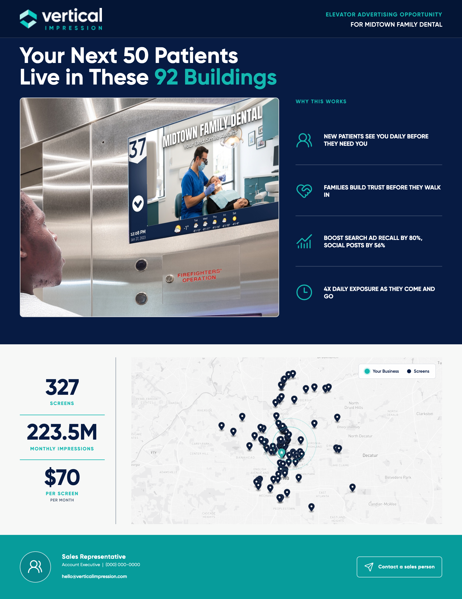
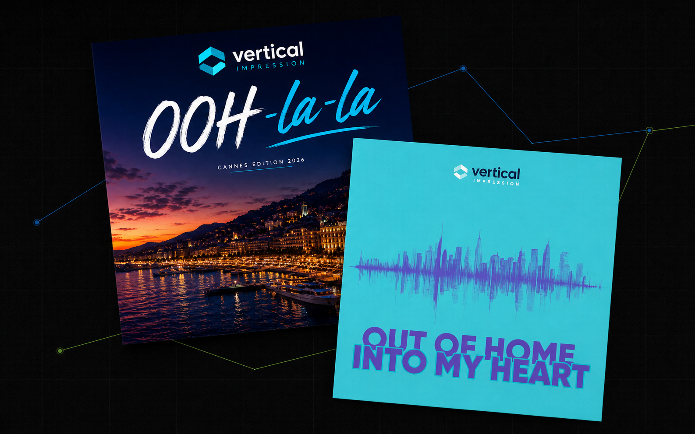
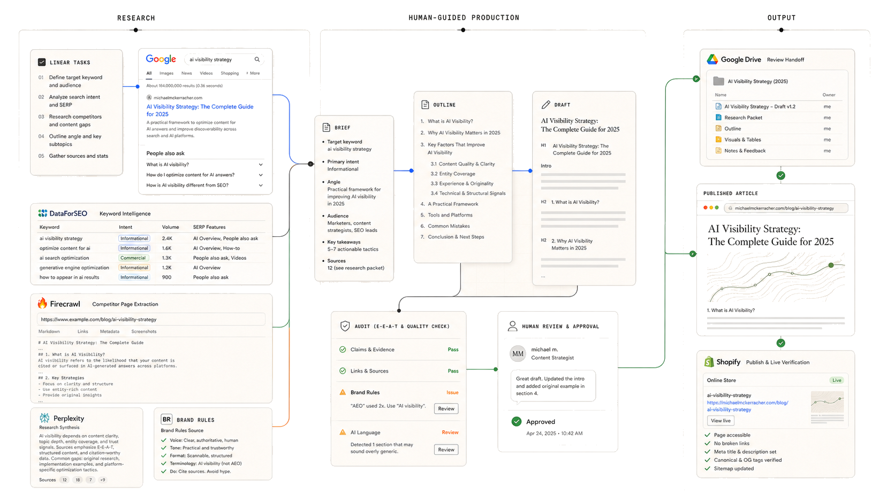

Bringing a community site to life.
Reworked around community life: clearer parish information, living bulletins and events, and educational stories brought to life through interaction.
I build websites, product stories, sales material, and AI-enabled marketing systems that help teams explain, sell, and scale.And sometimes, stuff just for fun.
Reworked around community life: clearer parish information, living bulletins and events, and educational stories brought to life through interaction.
From no web presence to a lead magnet: a useful website, local tools, and a programmatic search system built to turn nearby demand into bookings.
189 organic clicks in the latest 28 days · 83 pages averaging page one

A proposal system that turns local business data into tailored media plans, maps, and campaign creative.
A product story that educates buyers about a misunderstood advertising medium: where it reaches people, why attention is different, and when it works.
Two AI-assisted music releases built around the language, places, and culture of digital out-of-home advertising.

I trust work you can use, learn from, and improve.
Search data and human review move useful writing from research to measurable published performance.

I was born and raised in Toronto. My first look at marketing came at six, helping my dad at his Chrysler dealership. I loved spending weekends there, looking through the brochures and the marketing around the showroom and thinking, “This made the cars look really cool.” That was probably the start of it. I’ve been doing marketing ever since.
Now I live in Coldstream, BC, raising four kids and sharing the house with a cat and a dog. When I should probably be resting, I spend an unreasonable amount of time tinkering with AI and building things simply to see if I can. Even when the practical value is questionable.
There’s still value in the process.
The portrait starts with one approved painting. A masked typing loop supplies the hand movement, while 66 registered head poses map the cursor or touch position to changes in gaze.
The useful lesson was to constrain the AI, isolate only what needed to change, and composite it back into a stable source.
GTM Engineer & Co-Founder
Product Marketing Manager
Senior Manager, CX Design
Digital Integration & Retail Marketing
Associate Manager, Retail Marketing
The work is gathering.